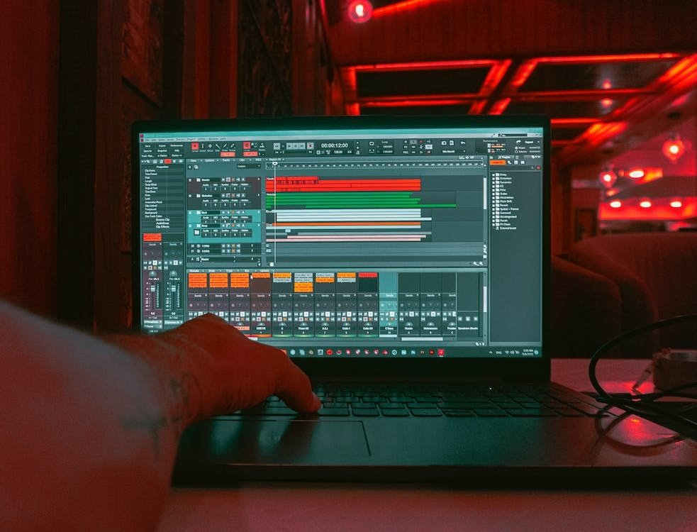
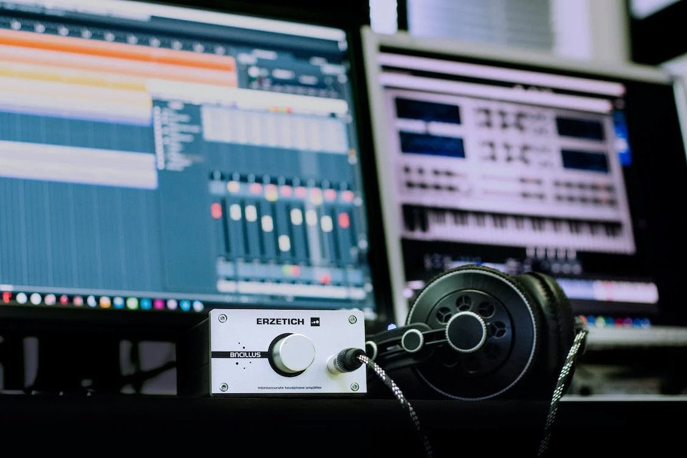

Digital Audio Workstations (DAWs)

Digital Audio Workstations, commonly referred to as DAWs, have been a game-changer in the music industry. DAWs allow producers to record, edit, mix, and master music on a computer, eliminating the need for bulky analog equipment. DAWs have made it easier for musicians to create music, and producers to collaborate on projects remotely. Some popular DAWs include Logic Pro X, Ableton Live, and Pro Tools.
Read more.
Sampling

Sampling is the process of taking a sound recording from an existing piece of music and reusing it as an instrument or element in a new composition. With the advancement of technology, sampling has become easier and more accessible, allowing producers to incorporate a wide range of sounds into their music. Sampling has been used in various genres, from hip-hop and electronic music to rock and pop. It has opened up new creative possibilities for producers and has given rise to subgenres such as mashup and remix culture. Some popular sampling tools include Native Instruments Kontakt, Spectrasonics Stylus RMX, and Ableton Live's Simpler instrument.
Read more.
Auto-Tune
Auto-Tune is a pitch-correction software that has become a ubiquitous tool in the music industry. It allows producers to correct pitch inaccuracies in vocals or instruments, giving recordings a more polished sound. Auto-Tune has been used by artists such as T-Pain, Kanye West, and Cher, and has become a hallmark of modern pop music.
Read more.